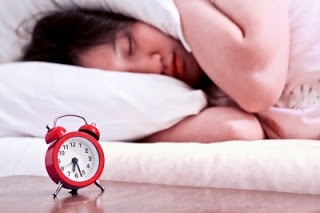

All About Life
kumpulan artikel-artikel kehidupan sehari-hari
Manfaat Tidur Tanpa Bantal
Hai, Sahabat, Tips Kesehatan. Sudah berkualitaskah aktivitas tidur yang anda lakukan setiap harinya...???. Dalam hal ini dapat terlelap dan pulas dalam tidur malam yang anda lakukan. Sehingga aktivitas yang anda lakukan pada pagi hari dapat berjalan dengan lancar dan sesuai dengan keinginan. Salah satu tips yang dapat anda lakukan yaitu dengan tidur tanpa bantal. Lalu adakah manfaat luar biasa yang dapat kita peroleh dari tidur tanpa bantal bagi kesehatan...???
Sahabat, tips kesehatan. Ternyata dengan tidur tanpa bantal, banyak sekali manfaat yang dapat anda peroleh untuk kesehatan. Sehingga sangat dianjurkan agar aktivitas tidur yang anda lakukan tanpa menggunakan bantal. Salah satunya yaitu mendapatkan tidur yang berkualitas. Kali ini tips kesehatan akan mengetengahkan tentang manfaat luar biasa tidur tanpa bantal bagi kesehatan anda. Tips kesehatan, berikut ini manfaat luar biasa tidur tanpa bantal bagi kesehatan anda :
1. Dengan tidur tanpa bantal akan membuat anda tampak lebih awet muda atau dengan kata lain dapat mencegah penuaan dini. Ini dikarenakan, Bagi anda yang tidak menggunakan bantal dalam tidurnya, maka tidak akan menekankan wajahnya pada bantal yang dapat meninggalkan kerutan- kerutan pada wajah anda.
2. Anda akan mendapatkan tidur yang berkualitas setiap malamnya jika tidak menggunakan bantal. Ini dikarenakan tubuh anda akan berada pada keadaan normal dan tidak tinggi sebelah seperti pada saat anda menggunakan bantal saat tidur.
3. Tidur tanpa bantal ternyata sangat baik kesehatan tulang punggung anda. Ini dikarenakan, ketika menggunakan bantal saat tidur, tulang punggung akan mengalami perubahan lokasi dan dapat menyebabkan sakit pada punggung pada pagi harinya.
4. Dengan tidur tanpa bantal ternyata dapat meluruskan tulang anda. Ini dikarenakan. saat anda tidur tanpa bantal, maka posisi tulang akan berada pada posisinya serta lurus sesuai posisi yang semestinya. Oleh sebab itulah, dianjurkan untuk tidak menggunakan bantal saat anda tidur.
Semoga tips kesehatan yang membahas manfaat luar biasa tidur tanpa bantal bagi kesehatan dapat bermanfaat bagi pembaca. Akhir kata, salam hangat dari penulis. ( Sumber : infomenarik4you ).Image courtesy of Feelart at FreeDigitalPhotos.ne
Tugas Praktikum Desain Web
Di kerjakan mulai: 12 Desember 2018
Whatsapp :082246399081
Website text and design is copyright.